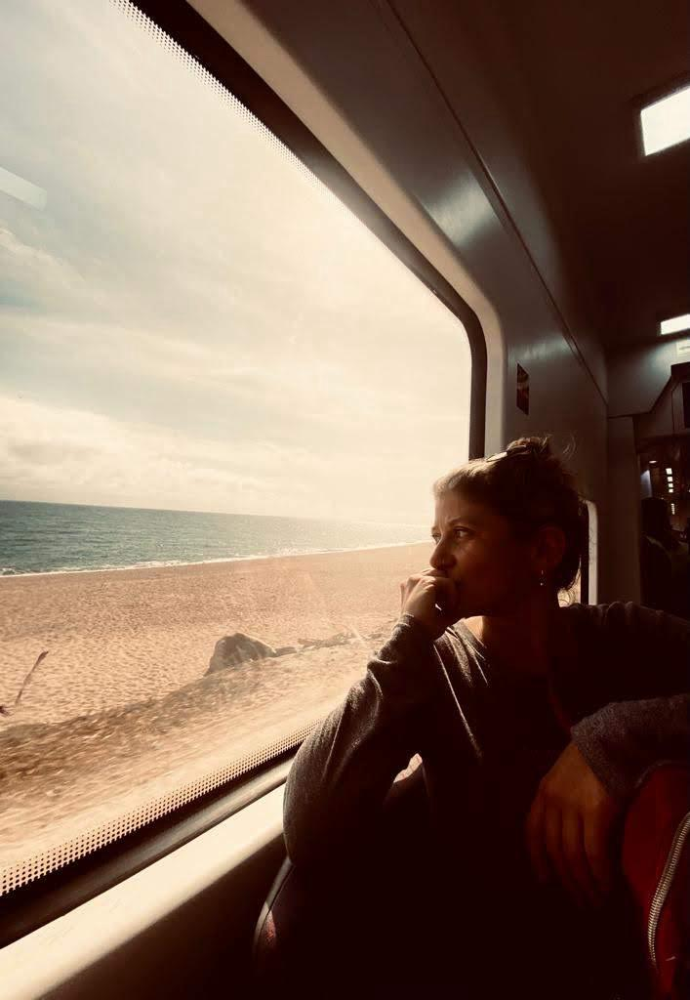

espiritualidad sin glitter
Acá se mira lo que potencia y lo que incomoda,
con la misma honestidad.
atravesar un momento oscuro,no te convierte en una persona oscura
propuesta
Tres lenguajes de sincericidio, para validar lo que sentís sin minimizarlo y sin quedarte ahí de más. La clave es el criterio propio, no las fórmulas universales.
Te da un lenguaje que ya existe, para nombrar lo que se siente pero todavía no se entiende.
Elegí tu informeLa escritura catártica busca alivianarte. Escribís sin corregir, sin releer, sin público: el lenguaje lo ponés vos. Lo que cae en el papel deja de dar vueltas adentro.
Por qué escribirOtros ya transitaron sentires parecidos a los tuyos, y lo dejaron escrito. A veces, en esa compañía, encontrás las respuestas que buscás.
Mi teoríael tiempo y su perspectiva,traen entendimiento
el blog

Hace tiempo que vengo mirando lo que incomoda. No es un proceso lineal, es más bien una montaña rusa. En el camino, los libros, la escritura y los números se volvieron mis pilares, y así nació fluyir. No hablo desde afuera: lo transito yo también, todos los días.
Cómo llegué acá